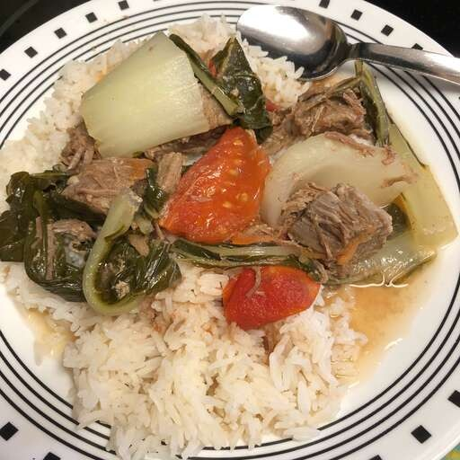

Sinigang na Baka

Sinigang na Baka from the Philippines
Simple beef, vegetable, tamarind based soup that we eat over rice! A meal in itself!
Ingredients
- 2 tablespoons of Canola oil
- 1 large onion, chopped
- 2 cloves garlic, chopped
- 1 pound beef stew meat, cut into 1 inch cubes
- 1 quart of water
- 2 large tomoatoes, diced
- 1/2 pound fresh green beans,rinsed and trimmed
- 1/2 medium head bok choy, cut into 1 1/2 inch strips
- 1 head fresh broccoli, cut into bite size pieces
- 1 (1.41 ounce) package of tamarind soup base
Steps
- Heat oil in medium stock pot. Saute onion and garlic until tender.
- Add beef to pot, and saute until browned.
- Pour in water. Bring to a boil, reduce heat, and simmer 20 to 30 minutes.
- Place tomatoes and green beans in pot, and continue to simmer for 10 minutes.
- Stir in bok choy, broccoli and tamarind soup mix. Simmer for an additional 10 minutes.